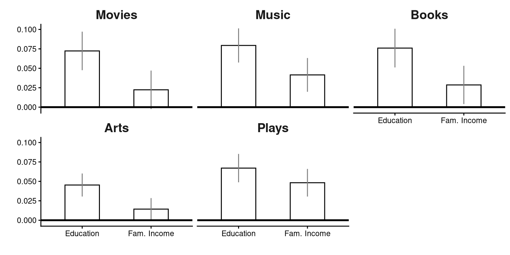
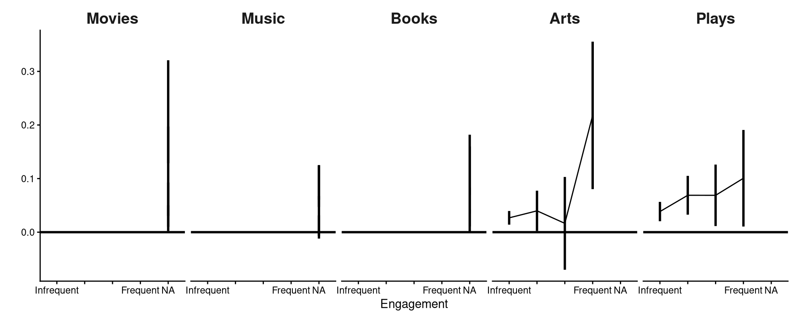

formulas_t2 <- list(
Movies = reformulate(c(xvars, "c_freq_movies"), "talk_movies"),
Music = reformulate(c(xvars, "c_freq_music"), "talk_music"),
Books = reformulate(c(xvars, "c_freq_books"), "talk_books"),
Arts = reformulate(c(xvars, "c_freq_arts"), "talk_arts"),
Plays = reformulate(c(xvars, "c_freq_plays"), "talk_plays")
)
models_t2 <- lapply(formulas_t2, function(f) polr(f, data = df, Hess = TRUE, method = "probit"))
modelsummary(models_t2, stars = TRUE, output = "../Tabs/table2.html")Data Analysis & Replication
Table 2: Predictors of Culture Talk
Table 3: Factor Loadings for Frequency Items
# Stata: factor freq*, fac(2) pcf mine(.9) / rot, pro(3)
freq_vars <- df %>% select(starts_with("freq_")) %>% mutate(across(everything(), as.numeric))
fa_res <- principal(freq_vars, nfactors = 2, rotate = "promax")
print(fa_res$loadings)
Loadings:
RC1 RC2
freq_books 0.622 -0.207
freq_arts 0.814 -0.160
freq_plays 0.650 0.229
freq_music -0.175 0.934
freq_movies 0.378 0.428
RC1 RC2
SS loadings 1.645 1.176
Proportion Var 0.329 0.235
Cumulative Var 0.329 0.564# Save factor scores to dataframe
df$hi <- fa_res$scores[,1] # Check if Factor 1 is Highbrow
df$pop <- fa_res$scores[,2]
# Overall factor
fa_all <- principal(freq_vars, nfactors = 1)
df$all <- fa_all$scores[,1]Table 4: Highbrow and pop factors as predictors of talk
formulas_t4 <- list(
Movies = reformulate(c("c_freq_movies", "hi", "pop", xvars), "talk_movies"),
Music = reformulate(c("c_freq_music", "hi", "pop", xvars), "talk_music"),
Books = reformulate(c("c_freq_books", "hi", "pop", xvars), "talk_books"),
Arts = reformulate(c("c_freq_arts", "hi", "pop", xvars), "talk_arts"),
Plays = reformulate(c("c_freq_plays", "hi", "pop", xvars), "talk_plays")
)
models_t4 <- lapply(formulas_t4, function(f) polr(f, data = df, Hess = TRUE, method = "probit"))
modelsummary(models_t4, stars = TRUE, output = "../Tabs/table4.html")Table 5: Predictors of Cultural Participation
formulas_t5 <- list(
Movies = reformulate(xvars, "freq_movies"),
Music = reformulate(xvars, "freq_music"),
Books = reformulate(xvars, "freq_books"),
Arts = reformulate(xvars, "freq_arts"),
Plays = reformulate(xvars, "freq_plays")
)
models_t5 <- lapply(formulas_t5, function(f) polr(f, data = df, Hess = TRUE, method = "probit"))
modelsummary(models_t5, stars = TRUE, output = "../Tabs/table5.html")Figures: Marginal Effects
# Figure 1: Marginal Effect of Education vs Income
get_mfx_fig1 <- function(model, name) {
if (name %in% c("Movies", "Music", "Books")) {
# predict pr(out=4)
pred_fun <- function(mod, newdata) {
predict(mod, newdata, type = "probs")[, 4]
}
} else {
# predict pr(out=3) + pr(out=4)
pred_fun <- function(mod, newdata) {
preds <- predict(mod, newdata, type = "probs")
preds[, 3] + preds[, 4]
}
}
# Workaround for avg_slopes not accepting custom pred functions directly in all versions:
# Using marginaleffects >= 0.10: we can use `type = "probs"` and then aggregate,
# but since we want custom functions, it's easier to just compute it manually or use predictions().
# Since polr returns a matrix for type="probs", `slopes` handles it by returning a row per level.
s <- avg_slopes(model, variables = c("c_educ_imp", "c_finc_imp"), type = "probs")
if (name %in% c("Movies", "Music", "Books")) {
s <- s[s$group == "4", ]
} else {
s <- s[s$group %in% c("3", "4"), ]
s <- s %>% group_by(term) %>% summarize(estimate = sum(estimate), std.error = sqrt(sum(std.error^2)))
}
s$domain <- name
return(s)
}
fig1_data <- bind_rows(
get_mfx_fig1(models_t2$Movies, "Movies"),
get_mfx_fig1(models_t2$Music, "Music"),
get_mfx_fig1(models_t2$Books, "Books"),
get_mfx_fig1(models_t2$Arts, "Arts"),
get_mfx_fig1(models_t2$Plays, "Plays")
)
fig1_data$term <- factor(fig1_data$term, levels = c("c_educ_imp", "c_finc_imp"), labels = c("Education", "Fam. Income"))
fig1_data$domain <- factor(fig1_data$domain, levels = c("Movies", "Music", "Books", "Arts", "Plays"))
fig1 <- ggplot(fig1_data, aes(x = term, y = estimate)) +
geom_bar(stat = "identity", fill = "white", color = "black", width = 0.5) +
geom_errorbar(aes(ymin = estimate - 1.645*std.error, ymax = estimate + 1.645*std.error), width = 0, color = "gray50") +
facet_wrap(~domain, nrow = 2) +
theme_classic() +
geom_hline(yintercept = 0, size = 1) +
labs(x = "", y = "") +
theme(strip.background = element_blank(), strip.text = element_text(size = 14, face = "bold"))
ggsave("../Plots/Figure1_Educ_Inc.png", fig1, width = 8, height = 5)
fig1
# Figure 2: Marginal Effect of Education by Levels of Cultural Engagement
models_int <- list(
Movies = polr(talk_movies ~ c_finc_imp + c_age_imp + c_gender + c_city + freq_movies * c_educ_imp, data = df, Hess = TRUE, method = "probit"),
Music = polr(talk_music ~ c_finc_imp + c_age_imp + c_gender + c_city + freq_music * c_educ_imp, data = df, Hess = TRUE, method = "probit"),
Books = polr(talk_books ~ c_finc_imp + c_age_imp + c_gender + c_city + freq_books * c_educ_imp, data = df, Hess = TRUE, method = "probit"),
Arts = polr(talk_arts ~ c_finc_imp + c_age_imp + c_gender + c_city + freq_arts * c_educ_imp, data = df, Hess = TRUE, method = "probit"),
Plays = polr(talk_plays ~ c_finc_imp + c_age_imp + c_gender + c_city + freq_plays * c_educ_imp, data = df, Hess = TRUE, method = "probit")
)
get_mfx_fig2 <- function(model, name) {
freq_var <- paste0("freq_", tolower(name))
# A faster approach is to evaluate for specific levels directly:
s <- avg_slopes(model, variables = "c_educ_imp", by = freq_var, type = "probs")
if (name %in% c("Movies", "Music", "Books")) {
s <- s[s$group == "4", ]
} else {
s <- s[s$group %in% c("3", "4"), ]
# aggregate out(3) and out(4)
s <- s %>% group_by(!!sym(freq_var)) %>% summarize(estimate = sum(estimate), std.error = sqrt(sum(std.error^2)))
}
s$domain <- name
names(s)[1] <- "Engagement"
return(s)
}
fig2_data <- bind_rows(
get_mfx_fig2(models_int$Movies, "Movies"),
get_mfx_fig2(models_int$Music, "Music"),
get_mfx_fig2(models_int$Books, "Books"),
get_mfx_fig2(models_int$Arts, "Arts"),
get_mfx_fig2(models_int$Plays, "Plays")
)
fig2_data$Engagement <- factor(fig2_data$Engagement, levels = 1:4, labels = c("Infrequent", " ", " ", "Frequent"))
fig2_data$domain <- factor(fig2_data$domain, levels = c("Movies", "Music", "Books", "Arts", "Plays"))
fig2 <- ggplot(fig2_data, aes(x = Engagement, y = estimate, group = 1)) +
geom_point(size = 4, shape = 18, color = "white", fill = "black") +
geom_line(color = "black") +
geom_errorbar(aes(ymin = estimate - 1.645*std.error, ymax = estimate + 1.645*std.error), width = 0, size = 1) +
facet_wrap(~domain, nrow = 1) +
theme_classic() +
geom_hline(yintercept = 0, size = 1) +
labs(x = "Engagement", y = "") +
theme(strip.background = element_blank(), strip.text = element_text(size = 14, face = "bold"))
ggsave("../Plots/Figure2_Educ_Int.png", fig2, width = 10, height = 3)
fig2